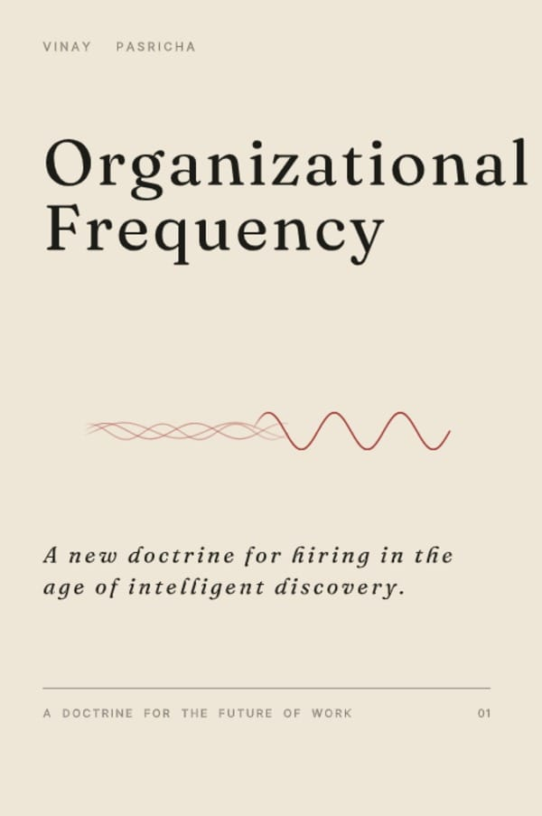

For a hundred years, companies have hired through resumes, interviews, and gut feel — static representations of dynamic human beings. They tell us what someone has done. They cannot tell us where someone belongs.
Organizational Frequency is a new doctrine for hiring in the age of intelligent discovery. Every company carries a frequency. Every person carries their own. Great performance happens when the two resonate.
Organizational Frequency is the first book in a series on the future of work — a short, dense doctrine for leaders, operators and founders who want to hire the way the next century will demand.
The doctrine is built on four stages, each a discipline of its own — and each contradicting how most companies still hire today. They are not steps in a funnel. They are postures a hiring organisation must adopt before any individual hire is made.
Before you can hire for resonance, you must know what you are. Most companies do not. They have a values poster and a job description, but no honest map of their pace, decision style, tolerance for ambiguity, and intellectual register. Until the frequency is named, every hire is a guess.
Stop asking what they have done. Start asking how they naturally operate. A resume is a record of where someone has been; it does not reveal where they could thrive. Discovery uses signal — conversation, work product, real interactions — to surface frequency, not credentials.
The role is a snapshot. The environment is a living system. A candidate who would thrive under a different leader, in a different team, at a different stage, is not a bad hire — they are the wrong context. Validate by simulating the real environment, not by interviewing for the role description.
Hiring is not the end. Resonance evolves. A person's frequency shifts as they mature; the company's shifts as it scales. Growth is the discipline of keeping both in alignment — and noticing, honestly, when they no longer are.
Culture fit usually means "do they look like us, talk like us, agree with us." Frequency resonance is structural — about pace, decision style, and operating register, not about agreement or sameness.
Personality tests measure traits, abstracted from context. Frequency is contextual — the same person carries different frequencies in different environments. The map only matters in the territory.
"I just had a feeling about them" is the most common — and most expensive — failure mode in hiring. Intelligent discovery makes the gut visible: it names what the gut was sensing, and tests whether the signal is real.
AI tools have made screening faster, not better. Until the company knows its own frequency, AI just accelerates the wrong question. The doctrine comes before the algorithm.
Most hiring failures are not failures of judgement. They are failures of doctrine.
A hundred years of hiring practice has produced an industry that treats human beings as resumes — flat records of where they have been. The interview, in its modern form, is a 20th-century artefact: structured to test fluency, not fit. The gut, untrusted but constantly used, picks up signal the process discards. The result is a system everyone knows is broken, and almost no one has the doctrine to fix.
The cost is visible everywhere. A talented person hired into the wrong environment looks mediocre within six months. A mediocre hire in the right environment outperforms expectations. The conventional explanation — "they fit the culture" — is true but not useful. Culture is a downstream effect. Frequency is the upstream cause.
Organizational Frequency is the first volume of a longer doctrine on the future of work. It does not solve hiring. It re-names it. It treats hiring not as a transaction or a funnel, but as an act of discovery — the closest thing a company does to scientific inquiry. And it sets the foundation for the books that follow.
— Adapted from the preface to Organizational Frequency

A new doctrine for hiring in the age of intelligent discovery.